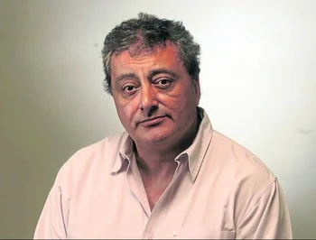
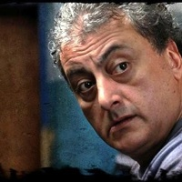
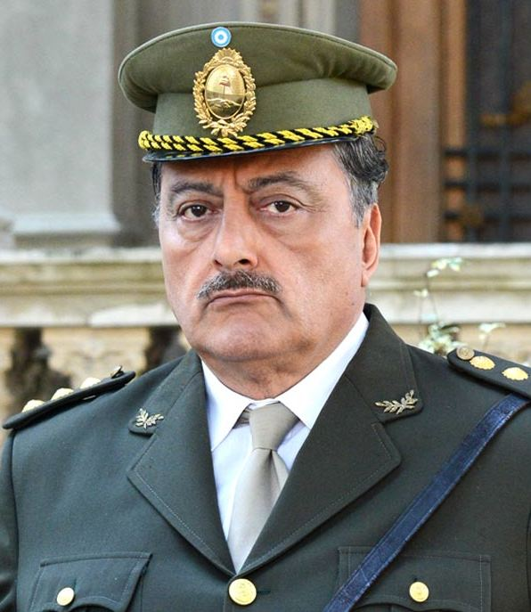

Claudio Rissi, un actor con sello propio.
Mario Borges, Bernardo Galvan, El fletero, Videla, etc
Su vida:

Claudio Rissi (Boedo, Buenos Aires, 22 de mayo de 1956-Palermo, Buenos Aires, 2 de febrero de 2024) fue un actor y director argentino de cine, teatro y televisión.
En sus comienzos fue conocido por sus interpretaciones de papeles como el de Galvan en Los simuladores, «El Fletero» en Okupas y el Comisario Filpi en El puntero entre otros en la televisión o Rudy "El Rey de la Noche" en 76 89 03. Debido a su aspecto de hombre recio, suele encarnar personajes con esa característica.

Rissi tuvo la particularidad de aparecer casi exclusivamente en papeles secundarios pero a la vez claves, generando que sea identificado entre el público por sus personajes más populares, refiriéndose a él, por ejemplo, más como «Borges, de El Marginal» que por su nombre real, lo que lo convierte en cara muy conocida por la audiencia argentina.

En los últimos años fue protagonista de la popular serie El marginal, donde se puso en la piel del líder de una banda carcelaria llamado Mario Borges, papel que finalmente le otorgó un merecido reconocimiento y popularidad.
 Rissi reflexionaba así sobre su papel protagónico en dicha serie:
“Lo estoy viviendo bárbaro. Tengo la sensación de que me dijeron `che, sacate el buzo y ponete los botines que entrás a jugar". Yo venía en el banco de suplentes hace mucho tiempo. De titular jugué muy pocas veces”.
El 2 de febrero de 2024, falleció a los 67 años en el Sanatorio de los Arcos de la ciudad de Buenos Aires, víctima de un cáncer.
Rissi reflexionaba así sobre su papel protagónico en dicha serie:
“Lo estoy viviendo bárbaro. Tengo la sensación de que me dijeron `che, sacate el buzo y ponete los botines que entrás a jugar". Yo venía en el banco de suplentes hace mucho tiempo. De titular jugué muy pocas veces”.
El 2 de febrero de 2024, falleció a los 67 años en el Sanatorio de los Arcos de la ciudad de Buenos Aires, víctima de un cáncer.